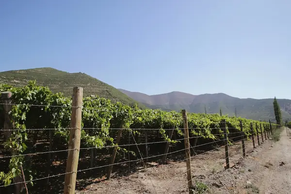

Home › Wine regions › Aconcagua Valley
Aconcagua Valley wine region

Photo: celso costa on Unsplash
Ripe reds inland, cooler styles on the coast.
A long, narrow country with Pacific and Andean influences, from desert north to cool south.
Climate and soil
Warm inland valley with Andean cooling; the coastal part is much cooler.
Key areas and appellations
Aconcagua Costa, Aconcagua Valley, Panquehue
Good to know
Big, ripe Cabernet and Syrah inland, with fresher styles near the coast.
The grapes of Aconcagua Valley
- Cabernet Sauvignon (red): blackcurrant, cedar, graphite. Best known in Bordeaux, Napa Valley, Coonawarra.
- Syrah / Shiraz (red): blackberry, pepper, smoke. Best known in Rhône, Barossa, Washington.
- Carménère (red): black cherry, pepper, herbs. Best known in Chile.
Notable producers in Aconcagua Valley
- Errázuriz
- Seña
- Von Siebenthal
Aconcagua Valley wines to try
Errázuriz Don Maximiano Founder's Reserve
Aconcagua Valley · Aconcagua · Cabernet Sauvignon, Carménère, Petit Verdot
Chile's classic icon: cassis, black cherry, graphite and polished tannins.
Food: Roast beef, lamb, aged cheese
Errázuriz Villa Cabernet Shiraz Malbec
Aconcagua Valley · Aconcagua · Cabernet Sauvignon, Shiraz, Malbec
Ripe Aconcagua red blend.
Food: BBQ, steak
Errázuriz Las Pizarras Chardonnay
Aconcagua Valley · Aconcagua Costa DO · Chardonnay
Grown on coastal slate a few miles from the Pacific, it shows lemon zest, wet stone and a whiff of flint, with tension and length that put it among Chile's finest Chardonnays.
Food: Sea bass with beurre blanc
Food to try with Aconcagua Valley wines
- Steak: Firm tannins in Cabernet and Tempranillo cut through the fat and char of a seared steak, while peppery Shiraz echoes the sauce.
- Roast leg of lamb: Lamb's rich fat and rosemary call for structured reds; Cabernet's cassis and cedar and Rioja's savoury oak are the classic partners.
- Shepherd's pie: Peppery, juicy Grenache and Shiraz match savoury lamb mince and gravy without overwhelming a homely dish.
- Venison stew: Gamey venison loves Syrah's dark fruit, pepper and smoky notes, and Grenache-led Rhône blends add warmth for a winter stew.
- Lamb tagine with apricots: Warm spices, apricots and lamb suit ripe, spicy Grenache and Syrah blends, whose soft fruit embraces the sweetness.
- Beef Wellington: Tender fillet and mushroom duxelles suit a structured but polished red; Bordeaux or Burgundy matches the richness without overpowering the pastry.
More wine regions in Chile
See Aconcagua Valley on the wine map
The Wine Reference newsletter
New wines, stories and career guides, one email a week at most.
Over 18s only. Unsubscribe any time with one click. Your email is stored securely by Kit and never shared.
Support The Wine Reference
This guide is free, with no paywall. If it helped you choose a bottle, you can buy me a glass and keep it growing.
🍷 Buy me a glass